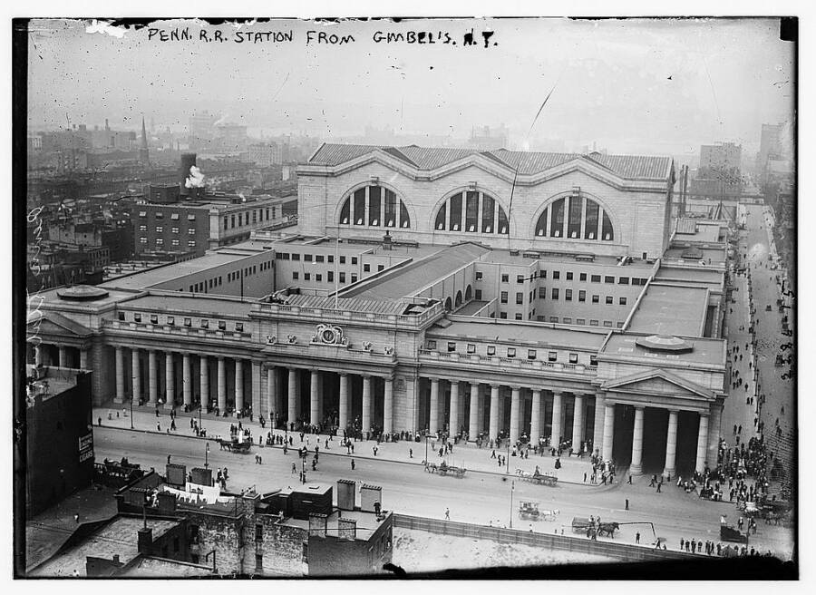
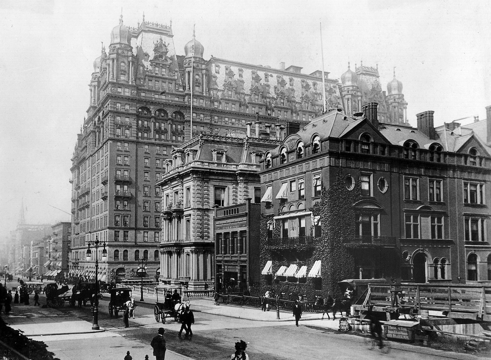
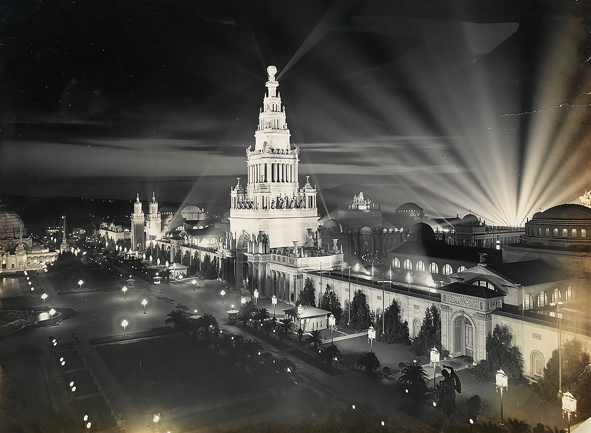
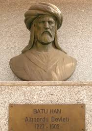
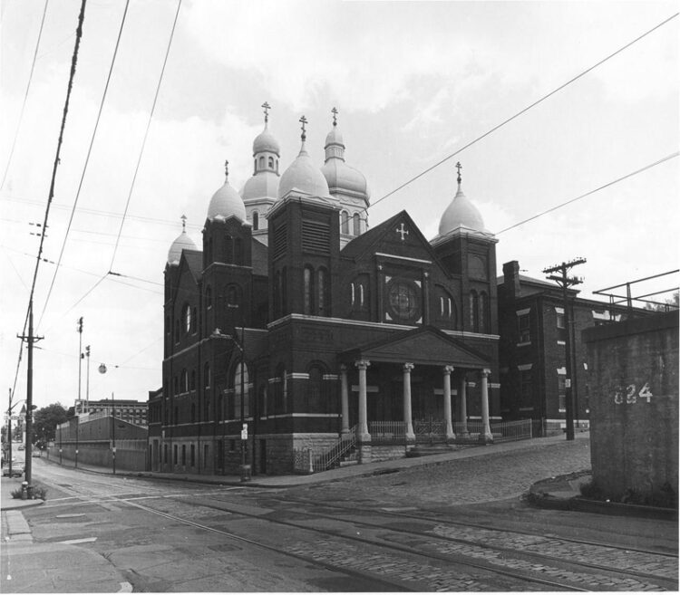

TARTARIA
.jpg)
Introduction
Tartaria (originally pronounced “Tataria” without the first “r”) is the name of the pre Mongolian empire that originated in northern Asia before spanning the entire northern hemisphere. Great Tartaria was the largest empire during its time and would have still been the largest empire today. The Tartarian empire flourished due in part of the civilization being a leader in advanced technology, free energy, and grand architecture.It was referenced in Encyclopedia Britannica (1771) and in Giovanni Botero’s 1599 map, yet today it’s missing from history books. Why?
The ancient civilization of Tartary originated in central Eurasia and was a vast kingdom encompassing most of Siberia. The Tartarian empire was so successful that it spread around the world, even into the Americas, and even today, we can see the remnants of the civilization’s grand architecture. From the Old World's Fairs and impossible architecture and engineering to ancient giants and an incredible case of timeline deception, this empire is shrouded in mystery. Written history seemingly omits this ancient civilization and its advanced technology from the books, and many question why.
This is an extensive and powerful kingdom, encompassing much of Asia, including parts of Scythia and Sarmatia, and extending into lands that are now called Cathay. The name “Tartars” is used to describe various tribes who inhabit these regions.
In Old Russian, 'Tata' means distant ancestor, the one from whom everything began, and 'Arnja' means land. Tartarija translates to the land of distant ancestors or homeland."Contrary to the official narrative, the Tartarians saw themselves as the progeny of Tarh and Tara -deities revered by the ancient Aryans, figures woven into the lore of Aryan peoples, sometimes under different names. As brother and sister, according to ancient Slavic beliefs, they were the custodians of the lands, offspring of the thunder god Perun--purifier and overseer of justice and order.
Tartary was historically divided into several regions, including those ruled by different khans. Some of these rulers maintained influence over lands reaching Europe and the Middle East.
Moreover, the very name "Tartaria" has sparked controversy, as it has been associated with conflicting narratives and interpretations. Some scholars argue that the term "Tartaria" was a Western invention, used to lump together various nomadic tribes and regions without a cohesive political entity. They contend that the term was used as a convenient label for territories that Western powers did not fully understand or have control over.
Literary
Some modern Western blogs say that the Napoleonic Wars and the Tsarist Wars were part of a process of destroying Tartarian civilization and erasing its identity.
Some New Age texts describe Tartaria as the land of the "Ancient Teachers" or "Hidden Sages."
According to ancient writings, approximately 13,000 years ago, a military conflict erupted between the Old Aryan Empire and Atlanj (Atlantis). This conflict was characterized by the use of nuclear and thermal nuclear weapons. The consequences of this conflict were far-reaching, leading to a second global catastrophe.
Obeda, who self-identifies as Māori, said, “Most, if not all of our cultural history has been fabricated. Racial identity was something the controllers brought in to divide us. Tartaria was a worldwide civilization that lived in harmony, and had access to technology that we could only dream
In the Slavic – Aryan Vedas, this event is depicted in the following manner: “A profound darkness shall envelop Midgard realm... And celestial fire shall ravage vast stretches of the land... Where once beautiful gardens bloomed in splendor, Great deserts shall now extend their barren reach... Instead of the life-giving soil, the seas shall thunder, And where the waves once crashed, they shall emerge, Tower-like mountains adorned with eternal snow...” ("Slavic-Aryan Vedas," Perun's Book of Wisdom, Circle 1, Santia 6, 45s.).
Believers in this lost empire have developed an alternative history of the Earth, one that claims the Great Wall of China and Old Penn Station in New York City could have been built by the same people. Essentially, theorists claim modern buildings are actually 1,000 years old and survived the flood that flattened the rest of the Tartarians’ work.

Believers also agree that, while the mud floods destroyed much of Tartaria, the resulting damage from both World War I and World War II supposedly contributed to the erasure of the empire. Indeed, they claim that the wars were planned to intentionally destroy what was left of Tartarian cities.
In the seventeenth century, the Ming dynasty of China collapsed due to corruption, famine, and internal unrest. This opened the way for the Manchu tribes from Manchuria (northeastern China), formerly known as the Niuche or Jurchen, to invade and seize power. They eventually established the Qing dynasty (1644–1912). From the European perspective at the time, any people coming from Inner or Northern Asia were generally labeled as “Tartars” or “Tartarians.” Thus, Western sources often described the Manchu conquest of China as a takeover by a Tartarian kingdom, presenting it as a foreign power overthrowing one of the world’s oldest civilizations. The Chinese perspective, however, is different. Chinese historians do not view the Manchu as complete outsiders. Instead, they see the Qing dynasty as a legitimate part of China’s dynastic succession, much like the Yuan dynasty (established by the Mongols) before it. Over time, the Qing rulers embraced Confucian traditions and portrayed themselves as protectors of Chinese culture, integrating into the broader national history. This creates a clear contrast: while European accounts emphasized the “Tartarian” identity and depicted the conquest as the fall of China to foreigners, Chinese historiography incorporated the Qing into the continuity of imperial rule, treating them as part of the legitimate unfolding of Chinese civilization.
The word Tartaria in Greek language and mythology means hell, due to the brutality of their invasions.
Islam spread there 400 years ago, not 1,000 years ago, as the Russians claim. The Russians, who advocate for their support of Muslims, conceal their history with them. Two hundred years ago, Islamic countries included Bulgaria, Serbia, Greece, Romania, Ukraine, Georgia, Tartary, the Caucasus, Siberia, Kazakhstan, and most of eastern Russia, as far as China. However, the people were completely purged.
Some Muslim geographers (such as Yaqut al-Hamawi and al-Nuwayri) stated that Gog and Magog were behind a "huge wall in the lands of the Tatars." This wall is sometimes linked to the Great Wall of China, or to lost fortresses in Central Asia.
Some alternative narratives claim that the Great Tartarian Empire was a vast Islamic-Turkish civilization that stretched from France to Siberia and China, possessing advanced cities and a great infrastructure. However, after the decline of the Ottoman Caliphate, Russians and Slavs took control of its lands over the past four centuries, falsifying history and erasing its mention in textbooks and curricula. They claim that millions of Muslims were subjected to ethnic cleansing in those regions, and that the massive buildings in St. Petersburg and elsewhere were not built by the Russians, but by an ancient Tartarian civilization.
Pictures


Research
POEPLE
The Ergimul were a little known people of Alta in Great Tartary, recorded in 18th century gazetteers as being both Mahometans and Nestorians, two belief systems not often seen coexisting in such remote regions. Their homeland lay deep within the interior, wherein the terrain was vast, cold and largely unmapped.
Tartarian Emperors. Look at their appearance! They were not Mongols, they were Aryans!Namely, while researching Tartaria, in one point, you must come across Mongols and various "hordes", "savages" from the distant Asia ... another false story.
These sculptures are in Turkey, they made their appearances to look like Anatolian Turks. But in reality they had Mongoloid facial structures. When Soviet scientists excavated the tomb of Tamerlane, they took his skull to a laboratory in order to finalize his facial structures, the results were shoking for everybody he had mongoloid face with ginger hair and beard
We also believe the Tartarians were Mongols or Chinese. The famous Genghis Khan was said to be a Mongol emperor but early manuscripts seem to disagree. Tartaria often divided into several different areas will often contain the word scythia.... Rather unrelated to China
If history interests you at all, then you've probably found your own inconsistencies. Communist Russians (The Bolsheviks) were said to have dismantled the "Tartarian Empire" and scrubbed them from His-Story (declassified CIA document in a previous post)
There is evidence that at least some of the Tartarians were giants. Besides giant buildings with giant, inexplicable doors, there were maps showing giants during "early" exploration of the Americas. There are theories that the first cataclysm or war was in the 13oo's, which cause much destruction, the dark ages, and the Plague.
It is believed that the Tartars were Breatharians, a being that receives energy directly from the ether, in the same way that plants obtain food for energy.

Geography and Climate
Tartary extends from the east, bordering the powerful kingdom of China, southward toward India, and westward toward the Caspian Sea and Poland. To the north, it reaches the frozen Arctic regions, which are largely uninhabitable. The southernmost part reaches nearly 40 degrees latitude. The air is severe, cold in winter, and scorching in summer, with frequent storms.
Later maps held onto the label “Tartary,” but the wider variety of information sources available to European cartographers by this time meant that their maps were more refined. Many maps from the 18th century on include multiple regions designated as “Tartary,” often with a modifier, which each of which occupied a more defined area than the Tartary of 16th century maps. This 18th-century British map of Modern Asia includes two Tartaries: “Western Tartary,” extending from the Caspian Sea to Tibet and parts north; and “Chinese Tartary,” encompassing Manchuria, Mongolia, and parts of northern China. Much of North Asia, having now been incorporated into the Russian empire, has now been given the label “Siberia” in addition to the specific regional names Orenburg, Tobolsk, and Yakutsk.
Historical documents confirm that in 1776, immediately after the martyrdom of Togachev, the United States of America emerged. On May 1, 1776, the Freemason Adam Weishaut established his territorial claims, after which the Romanovs began to rewrite the story of Tartaria. They carved up the vast lands of Moscow Tartary, including Russia, the Urals, Siberia, and the Far East in Anurica, Alaska. Washington and Krivan were ceded to the Romanovs in 1829, and the rest of North America to the United States. Some associate the name with the Tatars, others associate their name with the Mongols, and this is not true. On August 14, 1944, a document was made public, which stated: The Central Committee of the Communist Party, based in Moscow, issued a directive ordering the Tatar District Committee of the Party to initiate a scientific review of the history of Tartaria, to purify the history of Tartaria. It is planned to rewrite the history of the Tatars - and let's be honest, it was falsified - in order to remove references to the great Russian aggressions and hide the facts of the true course of relations. Russian Tatars. This was not an isolated case. In every Muslim region within the Soviet Union, historians, on the orders of the Communist Party, reconstructed
Architucture
The Tatars understood how to harness free energy from the atmosphere using intelligent architecture. The "Greco-Roman" architecture found around the world is actually buildings from this great empire they destroyed. Tesla simply had information that had been in use long before him.
One of the key events cited in this narrative is the Great Reset, a term used to describe a series of cataclysmic events—natural disasters, wars, and possibly engineered catastrophes—that led to the empire’s downfall. These events supposedly destroyed much of Tartary’s infrastructure and scattered its knowledge. The repurposing or demolition of Tartarian buildings is seen as part of this erasure, with many structures either retrofitted to fit modern narratives or completely obliterated.
The so-called Tartarian architecture—characterized by grand domes, spires, and intricate ornamentation—is said to have existed across Europe, Asia, and even parts of the Americas. While mainstream historians attribute these buildings to various cultural influences, proponents of the Tartary theory argue that they were part of a unified empire that possessed advanced knowledge of energy systems.

One of the most compelling aspects of Tartarian buildings is their supposed use of “free energy.” The ornate spires and domes are theorized to have functioned as energy receivers and transmitters, similar to antennas. Structures like the Palace of the Soviets in Russia and the Moorish Revival buildings in Europe are often cited as examples of this lost technology. Supporters of this theory believe these buildings were deliberately destroyed or repurposed to erase evidence of the Tartary Empire’s technological prowess.
Tartaria Minora was located near the Black Sea, and in Romania we also find Tartaria discs. This Tartaria technique comes from the people who have the Cucuteni culture. The Cucuteni culture is the culture that taught people and then gave birth to the Maori culture, which is the culture of Japan.
The Winter Palace and St. Isaac's Cathedral are said to have been built with advanced technology unknown in the 18th century. The massive domed architecture of Eastern Europe and Central Asia (such as onion domes) and government buildings in America and Australia (19th century) are seen by some scholars as a globally transmitted "Tartarian architecture," rather than the work of European colonists.
Some maps and drawings show towers with metal tops (spires). Some say they were not merely decorative, but "power towers" used to transmit electricity or free energy, like the spires of cathedrals in Europe. Ancient minarets in Central Asia
The story began when Nikola Tesla discovered the secrets of the preserved ceiling, which contained static electricity and enabled free travel by boat, car, or plane, simply by accessing the natural magnetic energy present everywhere. The world was shocked by Nikola Tesla's scientific discoveries, but the deep state knew full well that he had succeeded in uncovering the secrets and science of the Kingdom of Tartary. They described them as modern models to conceal the ancient and true function of their columns, arched openings, pinnacles, rose windows, and tiles decorated with columns, towers, and iron domes, according to the scientific articles used to implement them. The poison in honey and brainwashing that the first electric power station was established in Egypt in 1876, but when you look at the Kingdom of Tartaria, we find it bright and shining as if it is daylight, which confirms the lie of that paper.The power generation in Tartaria, both small and large, contained pipe devices to harmonize and heal the population through sound waves, which is now known as "cymatics." Look at the windows of churches and cathedrals